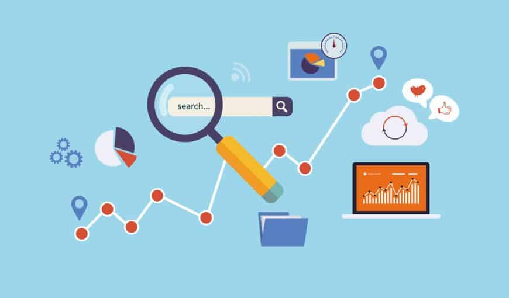

Comment Référencer Efficacement Votre Site Web sur Google
Introduction
Dans un monde où la majorité des internautes se tournent vers Google pour obtenir des informations, être visible sur ce moteur de recherche est essentiel pour le succès d'un site web. Le référencement naturel, ou SEO (Search Engine Optimization), est un ensemble de techniques visant à améliorer la position d'un site sur les résultats de recherche. Cet article explore les étapes essentielles pour référencer efficacement votre site web sur Google et augmenter sa visibilité de manière durable.

Comprendre les Bases du SEO
Le SEO repose sur plusieurs éléments qui aident Google à comprendre et à classer votre site. Ces éléments sont souvent classés en deux grandes catégories :
- SEO on-page : Optimisation des éléments internes de votre site (contenu, structure, balises HTML, etc.).
- SEO off-page : Facteurs externes comme les backlinks (liens entrants) et l'autorité du domaine.
Utilisation de Google Search Console
Google Search Console est un outil gratuit fourni par Google qui permet de suivre les performances de votre site dans les résultats de recherche. Voici comment l'utiliser :
- Vérifiez l'indexation : Assurez-vous que Google indexe correctement toutes les pages importantes de votre site.
- Analysez les mots-clés : Découvrez les mots-clés pour lesquels votre site apparaît et ajustez votre contenu.
- Corrigez les erreurs : Google Search Console vous alerte sur les problèmes d'exploration, comme les erreurs 404.
Google Analytics : Suivi du Trafic et du Comportement des Utilisateurs
Google Analytics est un autre outil essentiel pour comprendre comment les visiteurs interagissent avec votre site :
- Suivi du trafic : Analysez les sources de trafic (recherche organique, réseaux sociaux, etc.).
- Taux de rebond : Un taux de rebond élevé peut indiquer que le contenu ne répond pas aux attentes des utilisateurs.
- Pages populaires : Identifiez quelles pages attirent le plus de visiteurs et optimisez-les.
Outils de Suivi des Mots-Clés
Des outils comme Ahrefs, SEMrush, ou Ubersuggest permettent de suivre l'évolution des mots-clés et de comprendre la performance de vos pages dans les résultats de recherche.
Backlinks et Popularité
Les backlinks sont des liens externes pointant vers votre site. Voici comment obtenir des backlinks :
- Créer un contenu de qualité : Un contenu original incite naturellement d'autres sites à créer des liens vers le vôtre.
- Guest blogging : Publiez des articles invités sur des sites influents dans votre niche et incluez des liens vers votre site.
- Collaborations et partenariats : Établissez des partenariats pour échanger des liens.
Suivi et Analyse du Référencement
Une fois les optimisations effectuées, suivez les résultats de votre stratégie SEO :
- Google Search Console : Vérifiez l'état d'indexation de votre site.
- Google Analytics : Suivez le trafic de votre site et l'origine de vos visiteurs.
- SEMrush ou Ahrefs : Surveillez l'évolution de vos mots-clés.
Mises à Jour et Tendances du SEO
Le SEO est en constante évolution. Voici quelques tendances à surveiller :
- Mises à jour de l'algorithme Google : Restez informé des changements pour éviter des pénalités.
- SEO local : Optimisez votre site pour des recherches locales en créant et optimisant votre fiche Google My Business.
- Recherche vocale : Avec l’essor des assistants vocaux, il devient de plus en plus important d’optimiser pour les recherches vocales.
Conclusion
Le référencement d'un site web est un processus à long terme, mais les résultats en valent la peine. Suivez ces étapes, investissez du temps dans l'optimisation, et ajustez votre stratégie pour maximiser vos chances de succès sur Google.
Vous avez besoin d'un expert en SEO et développement web ? pour des solutions personnalisées et des conseils adaptés à votre projet. N'hésitez pas à
me contacter
dès aujourd'hui pour discuter de vos besoins !